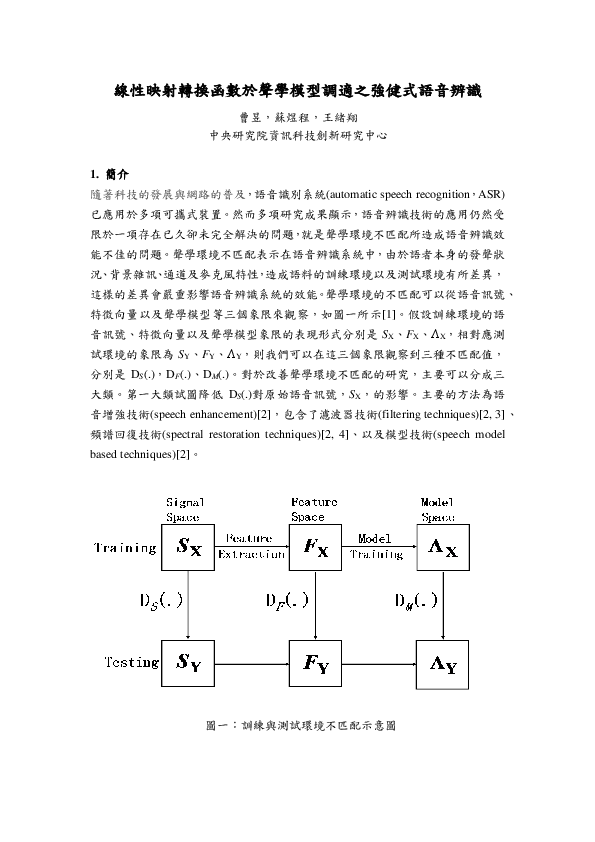

- 2018 -

Generative Adversarial Network and its Applications to Signal Processing and Natural Language Processing
Hung-yi Lee and Yu Tsao
Tutorial (Part-II) in ICASSP 2018 April 2018
- 2014 -
PAD-MMRT speech recognition software
Y.-C. Lin, Y.-H. Lai, H.-W. Chang, Y. Tsao, Y.-p. Chang, and R. Y. Chang
August 2014, Original corpus is prepared by K.-S. Tsai, L.-H. Tseng, C.-J.Wu, and S.-T. Young: “Development of a Mandarin monosyllable recognition test,” Ear and Hearing, vol. 30, no. 1, pp. 90–99, 2009
- 2012 -

線性映射轉換函數於聲學模型調適>之強健式語音辨識
曹昱，蘇煜程，王緒翔
計算語言學學會通訊 第 23 卷第 2 期 (2012 年 6 月 ) June 2012